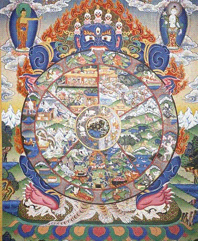
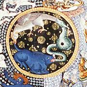

Listen to "Thanka" in English

XVIII THANKA
Le Noir cornu dans l'émeraude et l'extase
Sous l'Eveillé - Longue la marche par les
Rochers nus, les pics aigus, la steppe rase -
Luit vaguement parmi les dieux emmêlés.
(Quatre piliers pour affermir la lumière)
Tu connaîtras entre les quatre terreurs
Le puits terré de ta hantise première
Où l'eau fut flamme et fontaine des erreurs.
Oh cette danse où Tara tresse et dégoise
La fleur rouge, le moulin, le diamant.
(La femme grave à la coiffe de turquoise
Dans un faisceau claire comme un firmament)
Tourne aux crochets du démon pentacéphale
Le strict destin du serpent du coq, du porc.
Exhumez-moi cette face triomphale,
Trame dormante immobile du transport.
Michel Galiana (c) 1991

XVIII THANKA
The Horned Black One’s seat is emerald. Ecstasy
Beneath the Awakened — long is the march across
Bare rocks and pointed peaks and barren steppe— faintly
Gleams among the tight entanglement of the gods.
(There are four pillars to steady enlightening:
As for you, you shall know, between the four terrors,
Buried in the earth, the well of your first haunting,
Where water once was flame and fountain of errors.
Oh, that dance where Tara weaves and flourishes
In turn the red flower, the mill, the diamond.
(The solemn woman with her headdress of turquoise
Stands in a halo and shines like a firmament)
Turns on the hooks of the pentacephalic fiend
The strict fate moved by serpent, and cock, and boar.
Let that triumphal face for my sake be exhumed,
Dormant, unmoving weft whereon transport is born.
Transl. Christian Souchon 01.01.2006 (c) (r) All rights reserved
|
Ce poème se rapporte à un voyage que fit Michel Galiana au Ladakh, un désert montagneux aux confins nord de la province Indienne de Jammur et Cachemire. "Dans les monastères sont conservées de magnifiques peintures sur tissus de soie, de coton ou de lin, appelées "thankas", oeuvres multicolores à sujets spirituels et religieux. Il existe des règles bien définies à observer pour confectionner une thanka: ce travail ne doit être commencé qu'au moment propice et les lamas n'arrêtent pas de chanter des cantiques jusqu'à son achèvement. On procède alors à la cérémonie de mise en place de la toile qui devient désormais un objet de vénération d'origine divine. Ces toiles sont un incomparable mélange d'influences chinoise et indienne. Le thème traité le plus souvent dans ces peintures est celui du cycle de la vie et de la mort. On y dépeint l'être humain qui s'accroche à la vie, malgré toutes les vicissitudes, alors que le salut ne peut venir que de Bouddha. Une version de ce thème montre un démon, Mahakala (le grand Noir), portant sur la tête une guirlande de cinq crânes humains, qui tient une roue entre ses griffes et ses dents. La roue est le cercle de l'existence et le démon représente l'instinct de vie. Sur le moyeu de la roue, un coq,un serpent et un porc se poursuivent et actionnent la roue: ce sont le désir, la colère et l'ignorance. La roue est divisée en six secteurs, dont chacun décrit certaines réalités de l'existence terrestre (" rochers nus, les pics aigus, la steppe rase"...) ainsi que des demi-"dieux (emmêlés)" que l'on voit eux aussi assujettis à la vie et au trépas. Un peu éloigné de la roue et de ses suppliciés trône en extase Bouddha ("l'Eveillé") qui montre le chemin du salut. Les quatre éléments ont un rôle prépondérant dans ces représentations (et ils sont évoqués dans la seconde strophe avec la fameuse "hantise" qui tourmente l'auteur). D'autres symboles souvent usités sont l'auréole, le faisceau lumineux et les membres multipliés, -comme les nombreuses mains de la déesse Tara-, qui symbolisent l'omniprésence, la force et la bienveillance des personnages qui en sont dotés. " Le mot "trame" dans le dernier vers est utilisé à dessein: son équivalent sanskrit "tantra" désigne des manuels de pratiques ésotériques en honneur tant sans le bouddhisme que dans l'hindouisme. Source: "Ladakh" de Rajesh et Ramesh Bedi |
This poem refers to a trip Michel Galiana took to Ladakh, a mountain desert on the Northern borders of the Indian province Jammur and Kashmir.
"In the Buddhist monasteries are preserved beautiful coloured large paintings on silk, cotton and linen fabrics called "thankas" which have spiritual or religious themes. There are well defined guidelines in the scriptures for preparing a thanka: work begins at an auspicious moment and the lamas keep singing hymns till the painting is complete. It is then ceremonially established and from then on revered as divine. They are a unique blend of Chinese and Indian art.
The most frequently depicted theme of these paintings is the cycle of life and death. It portrays that the human being, in spite all his sufferings clings to life, whereas only Buddha can provide salvation.
The four elements are predominantly used in these paintings (they are evoked in the second verse by the poet along with his own ailments). Other oft used symbols are halos, lightning and multiple body parts(like the several hands of the goddess Tara) which symbolize omnipresence, strength and benevolence of the figures endowed with such features." |
Listen to "Thanka" in English